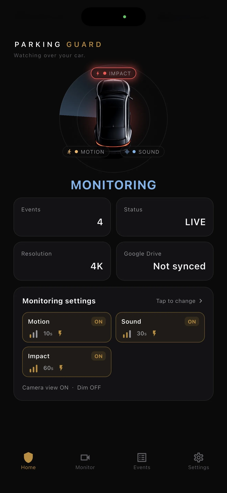

Check the phone first
Use a device with a sound battery, reliable camera, enough free space, and an operating system that can run the app.
Give an old phone a focused second job
A spare phone already contains a camera, microphone, motion sensors, screen, storage, and network connection. Turning it into a parked-car camera is therefore mainly a preparation task: confirm that the device is healthy, remove distractions, grant only the permissions needed, mount it safely, and test the complete path from detection to a saved clip.
Updated:

Use a device with a sound battery, reliable camera, enough free space, and an operating system that can run the app.
Reduce notifications, secure the account, prepare power settings, and use a stable holder that fits the chosen window.
Trigger motion, sound, and a harmless vibration while present, then open the actual stored clips before the first unattended session.
Inspect the device before using it in a parked car. A swollen battery, damaged case, unreliable charging port, severe overheating, failing camera, or unexpected shutdown makes it a poor candidate. Install current system updates available for that model, confirm the camera and microphone work, and leave enough free storage for event files and normal system operation.
Remove personal content you do not need on a device left in the vehicle. Use a strong passcode, check account recovery, and decide whether the phone needs a SIM card at all. Local recording is saved on the phone first, so a cellular plan is not required for the basic event file; optional Google Drive upload still needs a configured account and a usable network connection.
On iPhone, BlackShisa must stay in the foreground and the screen must remain on during monitoring. Configure display timing and brightness with that requirement in mind, connect power only with suitable equipment, and plan a session short enough for the conditions. Do not hide the app behind another screen or assume a locked iPhone continues the same monitoring workflow.
On Android, the app uses a foreground service and depends on the permissions you grant. Complete camera, microphone, notification, and relevant battery-management prompts, then confirm the service notification remains visible. Manufacturer power controls can differ, so test the exact phone after rebooting rather than copying settings from instructions for a different brand or Android version.
Choose whether the session is for the front approach, a neighboring door, a cart route, the rear corner, or another specific risk. Fit a stable holder that cannot become a loose object and does not obstruct the driver's required view, controls, vents, or airbags. Clean the lens and glass, and position them close enough to reduce reflections without stressing a moving window.
Record a test at the intended time of day. Walk through the approach path, open a nearby door safely, and make an ordinary sound while monitoring. Check the saved result for framing, focus, reflection, audio, and timestamp order. If the target is small or hidden, move the phone; extra detection sensitivity cannot restore detail that the camera never saw.
BlackShisa can use motion, sound, or impact as event triggers. A triggered recording includes the three seconds before detection and a post-trigger duration you select: 10, 30, or 60 seconds. Test each trigger you plan to use. A passing person, loud engine, or ordinary vibration may create unrelated events, while a hidden or very light action may create none.
Review files after each session and preserve relevant originals. Google Drive is optional; when enabled, verify the destination account and completed upload rather than assuming synchronization. A spare-phone camera does not guarantee prevention, identification, or acceptance of a recording by any authority. Consider heat, battery, theft risk, privacy, and local rules before leaving the device in a vehicle.
FAQ
Direct answers, including the constraints that matter before you rely on a spare phone.
Not for local-first event recording. A network is needed if you want an optional Google Drive upload, and its availability depends on your chosen connection.
Technically possible sessions may be interrupted by calls, notifications, navigation, or the need to take the phone. A dedicated spare is easier to leave mounted and configured consistently.
Verify the mounted view, trigger response, saved pre- and post-event clip, available storage, power plan, and the required iOS foreground or Android foreground-service state.
Check device health, set permissions, secure the mount, and open a real test event before using the phone for parked-car monitoring.